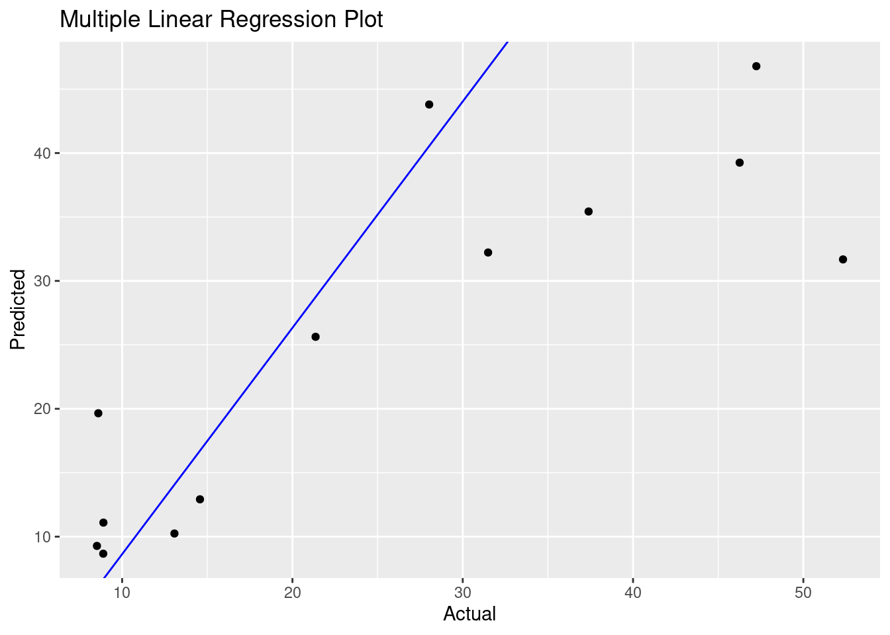

## 'data.frame': 32 obs. of 11 variables:
## $ mpg : num 21 21 22.8 21.4 18.7 18.1 14.3 24.4 22.8 19.2 ...
## $ cyl : num 6 6 4 6 8 6 8 4 4 6 ...
## $ disp: num 160 160 108 258 360 ...
## $ hp : num 110 110 93 110 175 105 245 62 95 123 ...
## $ drat: num 3.9 3.9 3.85 3.08 3.15 2.76 3.21 3.69 3.92 3.92 ...
## $ wt : num 2.62 2.88 2.32 3.21 3.44 ...
## $ qsec: num 16.5 17 18.6 19.4 17 ...
## $ vs : num 0 0 1 1 0 1 0 1 1 1 ...
## $ am : Factor w/ 2 levels "Automatic","Manual": 2 2 2 1 1 1 1 1 1 1 ...
## $ gear: num 4 4 4 3 3 3 3 4 4 4 ...
## $ carb: num 4 4 1 1 2 1 4 2 2 4 ...A data frame with 32 observations on 11 (numeric) variables.
Interval-Level Measurement - Criterion variable is assessed on an interval or ratio scale. Predictor variables are either (a) continuous quantitative variables assessed on an interval or ratio scale or (b) categorical variables that have been been appropriately transformed into dummy variables.
Linearity – should be able to fit a best-fitting straight line through the scatterplot.
Independence – each observation included in the sample should be drawn independently from the population of interest. Researchers should not have taken repeated measures on the same variable from the same participant.
Homogeneity of Variance (Homoscedasticity) – the variance of the Y scores should remain fairly constant at all values of X.
Normality – residuals of prediction should be normally distributed. Bivariate Normality – for any specific score on one of the variables, scores on the other variable should follow a normal distribution.
Independent Errors - For any pair of observations, the residual terms should be uncorrelated (Field, 2009a)
Absence of Multicollinearity - occurs when two or more predictor variables dispaly very strong correlations with one another (e.g. .80 on a Pearson scale).
Absence of Interaction - Regression coefficient for the relationship between Y and any X variable shoudl be constant acroos all values of the other X variables (Warner, 2008).
Absence of Outliers on the Predictor and the Criterion Variables - No data points that clearly stand out from the other data points in the data set.
Adequate Ratio of Observations to Predictor Variables - Multiple regression requires a relatively large number of observations to have reasonable levels of power. You will want to determine an adequate sample size.
Here we have the formula for the mulitple linear regression equation. The multiple linear regression equation takes the following form: \[\Large Regression\;Equation:\;\;\;\hat{y} = a + \beta_1(X_1) + \beta_2(X_2) + \beta_3(X_3)... +\beta_p(X_p) \]
\[\Large Y' = predicted\ score\\ a = constant\ (i.e.\ the \ intercept)\\ b_1 \ = \ unstandardized \ multiple\ regression\ coefficient\\ X_1 \ = actual\ score\ on\ the\ first\ predictor\ variable\\ B_p \ = unstandardized \ multiple\ regression\ coefficient\ of \ final\ predictor\ variable\\\ X_p \ = final\ predictor\ variable \]
data <- data.frame(mtcars)
model_one <- lm(formula = HOM ~ UEMP + LIC + GR ,data = detroit)
summary(model_one)##
## Call:
## lm(formula = HOM ~ UEMP + LIC + GR, data = detroit)
##
## Residuals:
## Min 1Q Median 3Q Max
## -15.7660 -2.1980 0.2235 1.9617 20.6495
##
## Coefficients:
## Estimate Std. Error t value Pr(>|t|)
## (Intercept) -9.070088 9.751601 -0.930 0.377
## UEMP 1.770078 1.281909 1.381 0.201
## LIC 0.006645 0.022324 0.298 0.773
## GR 0.037335 0.022401 1.667 0.130
##
## Residual standard error: 9.917 on 9 degrees of freedom
## Multiple R-squared: 0.7252, Adjusted R-squared: 0.6337
## F-statistic: 7.919 on 3 and 9 DF, p-value: 0.006801## (Intercept) UEMP LIC GR
## -9.070088472 1.770077944 0.006645165 0.037334976## (Intercept) UEMP LIC GR
## -9.070088472 1.770077944 0.006645165 0.037334976## (Intercept)
## -9.070088## UEMP
## 1.770078# Predict the values
detroit$predicted <- predict(model_one)
###Calculate the degrees of freedom of multiple linear regression model
df = nrow(detroit) - 3 - 1
print(paste("Degrees of freedom for model one: ",df))## [1] "Degrees of freedom for model one: 9"## [1] 101.7635ggplot(detroit, aes(x=HOM, y=predicted)) +
geom_point() +
geom_abline(intercept = coef(model_one)[1], slope = coef(model_one)[2], color="blue") +
labs(x="Actual", y="Predicted") +
ggtitle("Multiple Linear Regression Plot")
Note that the echo = FALSE parameter was added to the
code chunk to prevent printing of the R code that generated the
plot.